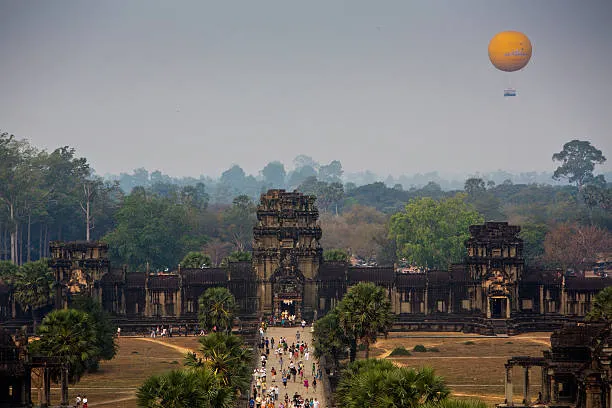

Angkor Wat, Cambodia
Constructed: Early 12th century
Angkor Wat began as a Hindu temple dedicated to Vishnu before gradually transforming into a Buddhist site, and it remains the largest religious monument on Earth by land area. Its builders diverted rivers to create massive moats and reservoirs, an engineering feat that supported a city of nearly a million people at its peak, more than London had at the time. The temple's walls are carved with nearly a kilometer of detailed reliefs depicting Hindu mythology, still remarkably vivid despite 900 years of jungle humidity.
Type: Khmer Temple Architecture